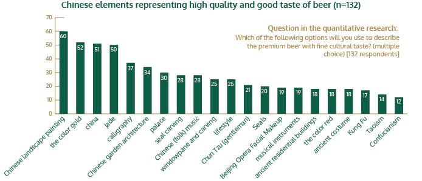
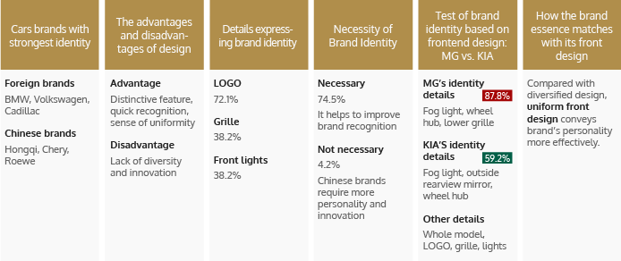

Product Innovation Research
Our product innovation research: help you get inspiration and launch marketable products/services.
Our product innovation research helps you develop more consumer-oriented products/services according to market segmentation. With growing demand for personalized service, companies need to improve consumer experience by innovation.
- What kind of products/services should you provide? What do consumers want? How to meet their needs in the best way?
- With several new products to launch, which concept should be introduced? Do consumers need and favor the function of the products? What kind of design appeals to them? Are the products in line with their values?
What are the features and strengths of our product innovation research?
- With professional experience in international design and consulting companies, our team is well versed in the process and tools of innovation research.
- Design thinking guides the whole process.
- We understand what kind of information is most indicative for design/innovation and how to convert research result into practical output.
- We use a range of test methods and tools for design evaluation.
What services are provided in our product innovation research?
Workshop design and organization:
we design methodologies and processes for each workshop involving participants in discussion, understanding and creation, such as helping companies to engage directly with consumers in the research process and convert research findings into viable concepts, and organizing consumer participation in the process of concept creation. Applying psychological tools and innovative methods, we provide tailored workshops to meet your every need.
Design research support:
To meet your design needs, we engage in a complete process of customized work, from adopting research methodologies, respondent recruitment, field work and moderation, to analyzing raw data and yielding practical research results.
Full-process testing:
Testing for the whole product life-cycle
- Stage of ideation: benefit of products/service, product positioning research
- Stage of concept creation: products/service concept testing
- Stage of development: package testing, product name/icon/slogan testing, flavor testing, product placement testing, sample testing
- Stage of trial marketing: pricing testing
- Stage of market launch: products/services improvement and upgrade
Typical projects of our product innovation research#1: study on marketing planning with Chinese elements
Beer Brand A intended to create an image of high quality and fine cultural taste with Chinese characteristics. Thus a Chinese element which can strike a chord with the target consumers should be found to facilitate brand marketing.
In accordance with brand positioning, we designed a 3-step research process involving multimedia diaries (qualitative research) and questionnaires (quantitative research).
- Step 1: To identify a Chinese element symbolizing high quality and fine cultural taste.
- Step 2: To summarize the common characteristics of premium products with fine cultural taste.
- Step 3: To work out connection between the Chinese element and the brand, both showing high quality and fine cultural taste taste.
As shown in the findings, the following Chinese elements represent high quality and fine cultural taste of beer: Chinese landscape painting, the color of gold, china, jade, calligraphy, Chinese garden architecture, etc.
As shown by the bar chart, “Chinese landscape painting” tops the list. After the quantitative research, we furthered our study with a series of open-ended questions. The respondents illustrated their preference for “Chinese landscape painting” from the aspects of art/culture, self-cultivation and the natural sceneries which are consistent with the taste and quality of beer.
- Freshness, elegance and magnificence
- Chinese artistic style and cultural connotation
- The limpidity of rivers and grandeur of mountains are consistent with the quality of beer: crystal look and fantastic taste.
- Smooth lines and refined painting symbolize the wonderful experience when wheat beer taste flows through the throat
- The soul and artistic conception of natural sceneries
To make our research findings more convincing, we also included part of the respondent recordings that helped the client understand consumers’ preference in a more straightforward manner.
- "Chinese landscape paintings, featuring conciseness and elegance with Chinese characteristics, distinguish itself from oil paintings in foreign countries."
- "Chinese landscape paintings are integrated with the nature, while beer with a fine cultural taste brings you back to nature."
- "Fine Chinese landscape paintings, with smooth lines and refined delineation, represent elegance and magnificence. Similarly, good beer provides wonderful experience when its wheat taste flows through my throat."
- "Landscapes of lofty mountains and limpid rivers make up a picture of poetic natural scenery."
Having adopted the element of Chinese landscape paintings to their products and marketing campaigns, our client has come up with a clearer brand image and increasing brand popularity.
Typical project of design research#2: innovation research on the brand identity of a car’s front design
The models of Car Manufacturer A have failed to convey a consistent brand identity through its front design. Do consumers care about such consistency? What details should be involved and what improvement can be made to convey a consistent brand identity?
To answer these questions, our automotive research team devised a series of methods, such as quantitative questionnaires (problem identification), focus groups (in-depth research), and multimedia diaries (finding solutions).
The research provides indicative findings for designers as below:
